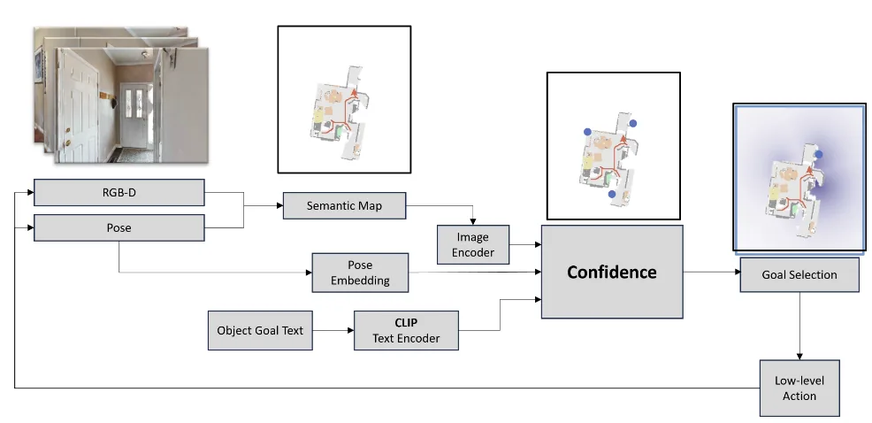

ICCAS 2025 · Published
Attention-Guided Semantic Navigation with Exponential Rewards
A confidence module fuses channel and spatial attention over semantic maps with CLIP goal-text and pose embeddings to score frontiers, trained with an exponential coverage reward.
- Venue
- ICCAS 2025
- Status
- Published
- Role
- Co-author
- When
- 2025
- Where
- Robotics & AI Lab, Kwangwoon University
Abstract
Object Navigation (ObjectNav) remains a central challenge in embodied AI. Agents must interpret visual cues and natural-language goals to locate objects in previously unseen environments, balancing high-level reasoning with low-level control. While supervised and pretrained model-based methods have demonstrated great performance, they often struggle to prioritize candidate goals effectively at each decision step.
To address this, we introduce two key contributions. First, a confidence module that joins channel- and spatial-attention over semantic maps with CLIP-based goal-text embeddings and pose embeddings, and refines these joined features via cross-attention to score frontier candidates. Second, an exponential coverage reward function that promotes efficient exploration and stabilizes reinforcement-learning training. Channel attention aggregates per-channel statistics to recalibrate feature importance, spatial attention highlights critical regions, and pose and textual embeddings guide goal selection, and a subsequent cross-attention layer produces confidence scores for frontier edges.
Empirical evaluations on standard ObjectNav benchmarks demonstrate significant gains in Success Rate and Success weighted by Path Length over competitive baselines. Ablation studies confirm that both the attention-based fusion and exponential reward are pivotal to these improvements.
